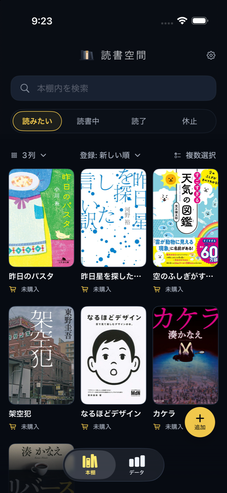

本を登録する
ISBNバーコード、キーワード検索、手入力から追加。気になった本を、その場で本棚に残せます。
READING SPACE · iOS
読みたい本も、読んだ本も、ひとつの本棚に。バーコードで登録し、読書を記録。図書館の在庫も調べられます（Pro）。
App Storeで見る
本を見つけたときから、読み終えたあとまで。必要なことを、使いたいときに。
ISBNバーコード、キーワード検索、手入力から追加。気になった本を、その場で本棚に残せます。
本棚内検索で登録済みの本を確認。読みたい・読書中・読了・休止の状態と、紙の本・電子書籍・図書館・未購入の所有状態で整理できます。
都道府県から図書館を選んで登録。本の詳細から、その本の蔵書や貸出状況を確認できます。位置情報の取得は不要です。
メモ、評価、読了日を記録。月別の読了数や年ごとのまとめから、読んだ時間を振り返れます。
ジャンル付きの読了本が3冊以上になると、読書傾向に合う未登録の本を表示します。おすすめは無料で使えます。
同じApple IDの端末でデータを使いやすく保てます。iCloud未サインインでもローカルで使えます。
図書館在庫検索に加え、バーコード連続読み取りや深い統計を買い切りで利用できます。購入の復元にも対応しています。
本棚と読書記録は端末内に保存し、iCloudにサインインしている場合は本人のiCloudにも同期します。広告目的のトラッキングは行いません。
本の検索・おすすめ・図書館検索では必要な情報を外部サービスへ送信し、利用状況は Firebase Analytics で計測します。詳しくはプライバシーポリシーをご覧ください。
不具合報告や要望はフォームから受け付けています。確認が必要な内容は、アプリ内の画面名に合わせて伝えてください。
開発元: fun-products / お問い合わせフォーム